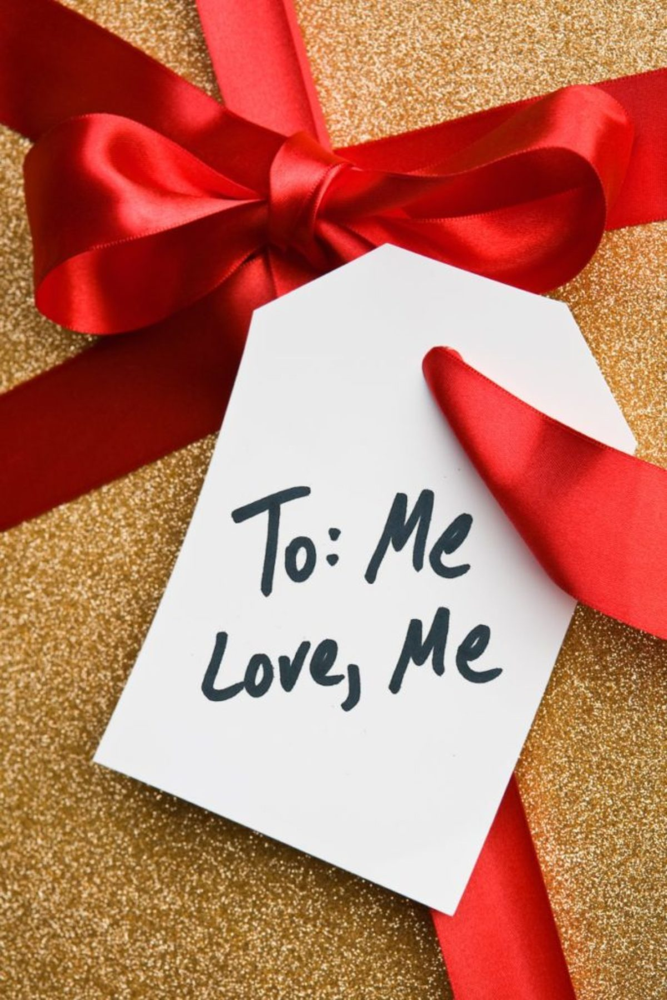
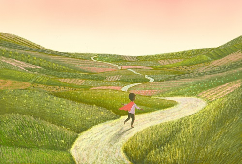

우울증을 극복하기 위해 몇 가지 중요한 접근 방법이 있습니다. 이 방법들은 개인이 자신의 상태를 인식하고 적극적으로 대처하는 데 도움이 될 수 있습니다.
작은 성취에도 스스로를 칭찬하고 보상하는 것이 중요합니다. 이는 우울증과의 싸움에서 큰 힘이 될 수 있습니다. 자신에게 적절한 보상을 주는 것에서 시작해서 스스로를 사랑하는 마음을 키워나가야 합니다.
영국스포츠의학저널에 따르면 약물이나 상담보다 운동이 우울증에 1.5배 더 좋은 효과를 보였습니다. 가벼운 운동부터 시작해 신체적 활동을 늘려가는 것이 우울증에 도움이 될 수 있습니다. 운동과 우울증의 상관관계
현대인은 '동기부여'에 중독되어 있습니다. 동기 부여가 항상 필요한 것은 아닙니다. 때때로 단순한 활동부터 시작하는 것이 더 큰 동기를 부여할 수 있습니다. 자세한 내용은 링크에서 확인할 수 있습니다.
자살예방 상담전화 1393로 연락하세요. 도움을 받을 수 있습니다.
정신건강 상담전화 1577-0199
희망의 전화 129
생명의 전화 1588-9191